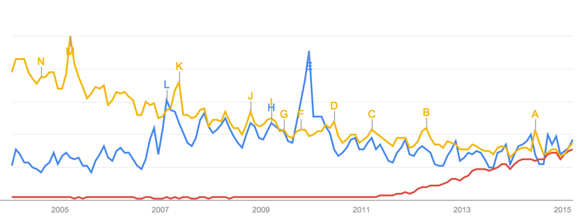

Comments? @brunosanNASA Climate computing center. x130 in 5 years, more than 35,000 processing cores. ~32 Petabytes of data (store of 100 Ptb). 1 day for 3 @ 3.5-kilometer global resolution,~ 3.6b cells.
"I know there is a forest somewhere in there"